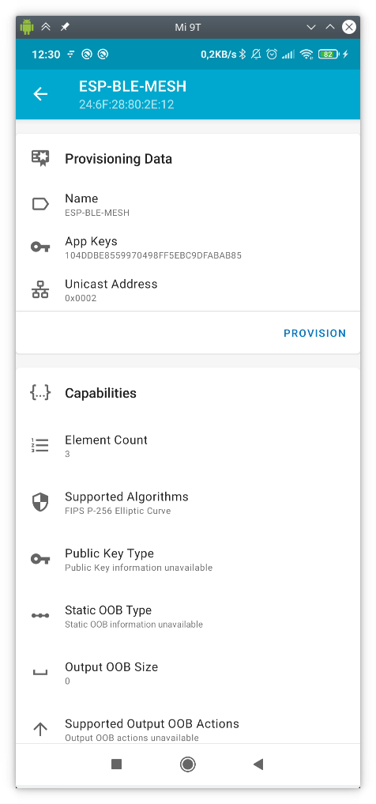

Lab 5. Bluetooth Mesh (BLE MESH)
Goals
-
Put into practice the concepts studied in theory in relation to BLE MESH, specifically the provisioning and client/server models.
-
Deploy a provisioning infrastructure for an ONOFF GENERIC model SERVER with provisioning from mobile application for remote control of on/off LEDs.
-
Deploy a provisioning infrastructure of a GENERIC SENSOR model provisioned from ESP32.
Example for the ON-OFF MODEL
The codes that we will study in this lab assignment are in
examples/bluetooth/esp_ble_mesh/ble_mesh_node in the system case OnOff
(first part of the assignment) and ble_mesh_sensor_model for the
sensor model (second part).
In addition, download and install on your smartphone the application nRF Mesh
(available both for Android and IOS). You will use this application to provision
the devices and interact with the mesh.
The ON-OFF server
This server implements only one element with two models:
-
Configuration Server model: The role of this model is mainly to configure Provisioner device’s AppKey and set up its relay function, TTL size, subscription, etc.
-
Generic OnOff Server model: This model implements the most basic function of turning the lights on and off.
The code in ble_mesh_demo_main.c contains the following main application
codes, that we can summarize as:
* Initialize Bluetooth Controller stack and Host stack (bluedroid)
* Initialize BLE Mesh stack
* Register the callback function of BLE Mesh provision and BLE Mesh model
* Implement and initialize BLE Mesh element
* Implement and initialize BLE Mesh Configuration Server model and Generic OnOff
Server model
* Function as BLE Mesh Configuration Server Model Get Opcode and BLE Mesh
Configuration Server Model Set Opcode
* Declare and define the RGB LED structure.
For better understanding of the code, the following sections provide a detailed
analysis the file ble_mesh_demo_main.c.
1. Initializing and Enabling BLE Mesh
When ESP32 system initialization is completed, app_main is called. The
code block below demonstrates the implementation of the functions in
app_main.
void app_main(void)
{
int err;
ESP_LOGI(TAG, "Initializing...");
board_init();
err = bluetooth_init();
if (err) {
ESP_LOGE(TAG, "esp32_bluetooth_init failed (err %d)", err);
return;
}
/* Initializes the Bluetooth Mesh Subsystem */
err = ble_mesh_init();
if (err) {
ESP_LOGE(TAG, "Bluetooth mesh init failed (err %d)", err);
}
}
In particular, the code includes:
- err = bluetooth_init(): initialization related to the Bluetooth protocol
stack (including Controller and Host)
- err = ble_mesh_init(): initialization related to BLE Mesh
Further, the code for initialization of the BLE Mesh protocol stack is introduced, together with the description of the required actions to initialize BLE Mesh.
static esp_err_t ble_mesh_init(void)
{
int err = 0;
memcpy(dev_uuid + 2, esp_bt_dev_get_address(), BLE_MESH_ADDR_LEN);
// See comment 1
esp_ble_mesh_register_prov_callback(esp_ble_mesh_prov_cb);
esp_ble_mesh_register_custom_model_callback(esp_ble_mesh_model_cb);
err = esp_ble_mesh_init(&provision, &composition);
if (err) {
ESP_LOGE(TAG, "Initializing mesh failed (err %d)", err);
return err;
}
esp_ble_mesh_node_prov_enable(ESP_BLE_MESH_PROV_ADV | ESP_BLE_MESH_PROV_GATT);
ESP_LOGI(TAG, "BLE Mesh Node initialized");
board_led_operation(LED_G, LED_ON);
return err;
}
Observet that the code includes the following funtionality:
-
esp_ble_mesh_register_prov_callback(esp_ble_mesh_prov_cb): registers the provisioning callback function in the BLE Mesh stack. This callback function gets executed during the BLE Mesh network configuration process. It allows the BLE Mesh stack to generate events and notify the application layer about important network configuration processes. This callback function mainly implements the following events: -
ESP_BLE_MESH_PROVISION_REG_EVT: Generated when the BLE Mesh initialization process is completed after calling the API functionesp_ble_mesh_init. It returns the initialization status of the BLE Mesh application. -
ESP_BLE_MESH_NODE_PROV_LINK_OPEN_EVT: Generated when a Provisioner and an unprovisioned device establish a link. -
ESP_BLE_MESH_NODE_PROV_LINK_CLOSE_EVT: Generated to notify the application layer that a link has been broken after BLE Mesh bottom-layer protocol sends or receives the messageThe Link Broken. -
ESP_BLE_MESH_NODE_PROV_OUTPUT_NUMBER_EVT: Received by the application layer if during the configuration processoutput_actionsis set asESP_BLE_MESH_DISPLAY_NUMBER, and the target peerinput_actionsis set asESP_BLE_MESH_ENTER_NUMBER. -
ESP_BLE_MESH_NODE_PROV_OUTPUT_STRING_EVT: Received by the application layer if during the configuration processoutput_actionsis set asESP_BLE_MESH_DISPLAY_STRING, and the target peerinput_actionsis set asESP_BLE_MESH_ENTER_STRING. -
ESP_BLE_MESH_NODE_PROV_INPUT_EVT: Received by the application layer if during the configuration processinput_actionsis set as anything butESP_BLE_MESH_NO_INPUT. -
ESP_BLE_MESH_NODE_PROV_COMPLETE_EVT: Received by the application layer when the provisioning is completed. -
ESP_BLE_MESH_NODE_PROV_RESET_EVT: Received by the application layer when the network reset is completed. -
esp_ble_mesh_register_custom_model_callback(esp_ble_mesh_model_cb): registers the model operation callback function. This callback function is used when the target peer operates the model state of the source peer after BLE Mesh has completed network configuration. This callback function mainly implements the following events:-
ESP_BLE_MESH_MODEL_OPERATION_EVT: Can be triggered by the two scenarios below:- Server model receives
Get StatusorSet Statusfrom Client model. - Client model receives
Status statefrom Server model.
- Server model receives
-
ESP_BLE_MESH_MODEL_SEND_COMP_EVT: Generated after the Server model sendsStatus stateby calling the API functionesp_ble_mesh_server_model_send_msg. -
ESP_BLE_MESH_MODEL_PUBLISH_COMP_EVT: Generated after the application has completed calling the APIesp_ble_mesh_model_publish_msgto publish messages -
ESP_BLE_MESH_CLIENT_MODEL_SEND_TIMEOUT_EVT: Generated when the Client model calls the API functionesp_ble_mesh_client_model_send_msg, but fails to receive ACK from the target peer due to timeout -
ESP_BLE_MESH_MODEL_PUBLISH_UPDATE_EVT: Generated after the application sets up the publish function to regularly send messages to the target peer.
-
-
esp_ble_mesh_node_prov_enable(ESP_BLE_MESH_PROV_ADV | ESP_BLE_MESH_PROV_GATT): enables the Advertising and Scan functions when the BLE Mesh initialization is completed. It makes the devices visible to Provisioners for network provisioning. -
board_led_operation(LED_G, LED_ON): initializes the RGB LED.
At this point, initialization and enabling of BLE Mesh as a node port is completed, which means a Provisioner can identify devices for network provisioning and data transmission.
2 Implementation of BLE Mesh Element Structure
In this section we shows: - Things that have to be done before the initialization of the previous section - How to add an element and a model to ESP BLE Mesh stack - How to choose a different encryption approach - How to declare the features of Proxy, Relay, Low Power and Friend
First of all, before calling the API esp_ble_mesh_init to initialize BLE Mesh,
an element and a model need to be declared and defined. The code block below
shows the declaration of an element structure.
/*!< Abstraction that describes a BLE Mesh Element.
This structure is associated with bt_mesh_elem in mesh_access.h */
typedef struct {
/* Element Address, it is assigned during provisioning. */
uint16_t element_addr;
/* Location Descriptor (GATT Bluetooth Namespace Descriptors) */
const uint16_t location;
/* Model count */
const uint8_t sig_model_count;
const uint8_t vnd_model_count;
/* Models */
esp_ble_mesh_model_t *sig_models;
esp_ble_mesh_model_t *vnd_models;
} esp_ble_mesh_elem_t;
The next code block shows the definition of an element structure, build from the
ESP_BLE_MESH_ELEMENT macro.
static esp_ble_mesh_elem_t elements[] = {
ESP_BLE_MESH_ELEMENT(0, root_models, ESP_BLE_MESH_MODEL_NONE),
};
Another code block provides the codes needed to implement the macro
ESP_BLE_MESH_ELEMENT.
#define ESP_BLE_MESH_ELEMENT(_loc, _mods, _vnd_mods) \
{ \
.location = (_loc), \
.sig_model_count = ARRAY_SIZE(_mods), \
.sig_models = (_mods), \
.vnd_model_count = ARRAY_SIZE(_vnd_mods), \
.vnd_models = (_vnd_mods), \
}
The variables of the element structure are as follows:
addr: stores the element primary address, used by Mesh Stack during the configuration process. It can be ignored for the higher level applications.loc: location descriptor defined by SIG. For this demo, set its value to0.model_count: number of SIG models supported in this element.vnd_model_count: number of the Vendor model supported in this element.models: pointer to the SIG Models that have already been defined.vnd_models: pointer to the Vendor Model that has already been defined.
3 Implementation of BLE Mesh Model Structure
The preceding section has introduced the specific ways to implement and define an element by passing specific model pointers to it. This section explains how to implement and define a Model structure, which is shown in the code blocks below.
/** Abstraction that describes a Mesh Model instance.
* This structure is associated with bt_mesh_model in mesh_access.h
*/
struct esp_ble_mesh_model {
/* Model ID */
union {
const uint16_t model_id;
struct {
uint16_t company_id;
uint16_t model_id;
} vnd;
};
/* The Element to which this Model belongs */
esp_ble_mesh_elem_t *element;
/* Model Publication */
esp_ble_mesh_model_pub_t *const pub;
/* AppKey List */
uint16_t keys[CONFIG_BLE_MESH_MODEL_KEY_COUNT];
/* Subscription List (group or virtual addresses) */
uint16_t groups[CONFIG_BLE_MESH_MODEL_GROUP_COUNT];
/* Model operation context */
esp_ble_mesh_model_op_t *op;
/* Model-specific user data */
void *user_data;
};
The block above shows a specific implementation of the model structure. Although this structure has many variables, only the following four ones are used for applications:
-
idandvnd: union variables, defining the SIG Model and the Vendor Model respectively. -
op: structure with a set of variables for the Model Operation, declaring the opcode that corresponds to Get, Set, or Status State, as well as the minimum value lengths that are supported in this module. -
pub: structure that needs to be defined if the Model structure supports the Publish function. -
user_data: optional variable for storing the application layer data.
The other structures and variables (keys, group, element) get their values through the BLE Mesh stack during the initialization or configuration stages. You are not required to initialize them.
The next code block presents the definition of the model structure, and the
root_models[] array. This array is used for indicating the number of the
existing model structures. A model is implemented by using a macro.
static esp_ble_mesh_model_t root_models[] = {
ESP_BLE_MESH_MODEL_CFG_SRV(&config_server),
ESP_BLE_MESH_SIG_MODEL(ESP_BLE_MESH_MODEL_ID_GEN_ONOFF_SRV, onoff_op,
&onoff_pub, &led_state[0]),
};
Different models require different macros. The existing types of models and
their respective macros needed for implementation are given in the table below
(as we are implementing a Generic OnOff Server model, we use the
ESP_BLE_MESH_MODEL_ID_GEN_ONOFF_SRV macro).
| Model Name | Macro Required for its Definition |
|---|---|
| Configuration Server Model | ESP_BLE_MESH_MODEL_CFG_SRV |
| Configuration Client Model | ESP_BLE_MESH_MODEL_CFG_CLI |
| Generic OnOff Client Model | ESP_BLE_MESH_MODEL_GEN_ONOFF_CLI |
| Generic Level Client Model | ESP_BLE_MESH_MODEL_GEN_LEVEL_CLI |
| Generic Default Transition Time Client Model | ESP_BLE_MESH_MODEL_GEN_DEF_TRANS_TIME_CLI |
| Generic Power OnOff Client Model | ESP_BLE_MESH_MODEL_GEN_POWER_ONOFF_CLI |
| Generic Power Level Client Model | ESP_BLE_MESH_MODEL_GEN_POWER_LEVEL_CLI |
| Generic Battery Client Model | ESP_BLE_MESH_MODEL_GEN_BATTERY_CLI |
| Generic Location Client Model | ESP_BLE_MESH_MODEL_GEN_LOCATION_CLI |
| Generic Property Client Model | ESP_BLE_MESH_MODEL_GEN_PROPERTY_CLI |
| Light Lightness Client Model | ESP_BLE_MESH_MODEL_LIGHT_LIGHTNESS_CLI |
| Light CTL Client Model | ESP_BLE_MESH_MODEL_LIGHT_CTL_CLI |
| Light HSL Client Model | ESP_BLE_MESH_MODEL_LIGHT_HSL_CLI |
| Sensor Client Model | ESP_BLE_MESH_MODEL_SENSOR_CLI |
| Scene Client Model | ESP_BLE_MESH_MODEL_SCENE_CLI |
Another important structure in a model is the esp_ble_mesh_model_op_t *op
pointer. This structure points to the operation structure that defines the
Model state. Generally, there are two types of models in BLE Mesh:
- Server Model:
- Consists of one or multiple states that can exist across different elements
- Defines the messages sent/received by the model, along with the element's
behavior.
- Example：On/Off switch --- Indicates the On/Off status.
- Client Model:
- Defines the messages used by the client to request, change or use the
relevant state of the server.
- Example：On/Off switch --- Indicates the On or Off message sent by the Client.
- Defines the messages used by the client to request, change or use the
relevant state of the server.
The following code block shows the declaration of the Model operation structure.
/*!< Model operation context.
This structure is associated with bt_mesh_model_op in mesh_access.h */
typedef struct {
const uint32_t opcode; /* Opcode encoded with the ESP_BLE_MESH_MODEL_OP_* macro */
const size_t min_len; /* Minimum required message length */
esp_ble_mesh_cb_t param_cb; /* The callback is only used for the BLE Mesh stack, not for the app layer. */
} esp_ble_mesh_model_op_t;
There are three variables in the declaration of the operation structure:
opcode: opcode corresponding to a state. As specified in BLE Mesh, the SIG Model opcode should be 1~2 bytes, and the Vendor Model opcode should be 3 bytes.min_len: min length of the messages received by the state. For example, OnOff Get state is 0 bytes, and OnOff Set State is 2 bytes.param_cb: used for the BLE Mesh protocol only. Applications need to set its value to0.
The definition for our OnOff Server code is:
static esp_ble_mesh_model_op_t onoff_op[] = {
{ ESP_BLE_MESH_MODEL_OP_GEN_ONOFF_GET, 0, 0},
{ ESP_BLE_MESH_MODEL_OP_GEN_ONOFF_SET, 2, 0},
{ ESP_BLE_MESH_MODEL_OP_GEN_ONOFF_SET_UNACK, 2, 0},
/* Each model operation struct array must use this terminator
* as the end tag of the operation uint. */
ESP_BLE_MESH_MODEL_OP_END,
};
The OnOff Client
The design of the client is much easier. In a generic way, it just defines an
ON/OFF Client model and waits to be provisioned. Once the provisioning process
is completed, every time one of the buttons on the board (RESET) is pressed, it
sends a request for a change in the status of the lights to all the nodes in its
mesh network. This behaviour is coded in the following functions defined in the
board.c file:
static void button_tap_cb(void* arg)
{
ESP_LOGI(TAG, "tap cb (%s)", (char *)arg);
example_ble_mesh_send_gen_onoff_set();
}
static void board_button_init(void)
{
button_handle_t btn_handle = iot_button_create(BUTTON_IO_NUM, BUTTON_ACTIVE_LEVEL);
if (btn_handle) {
iot_button_set_evt_cb(btn_handle, BUTTON_CB_RELEASE, button_tap_cb, "RELEASE");
}
}
void board_init(void)
{
board_led_init();
board_button_init();
}
The invoked function, example_ble_mesh_send_gen_onoff_set, sends a SET
operation to all network members:
void example_ble_mesh_send_gen_onoff_set(void)
{
esp_ble_mesh_generic_client_set_state_t set = {0};
esp_ble_mesh_client_common_param_t common = {0};
esp_err_t err = ESP_OK;
common.opcode = ESP_BLE_MESH_MODEL_OP_GEN_ONOFF_SET_UNACK;
common.model = onoff_client.model;
common.ctx.net_idx = store.net_idx;
common.ctx.app_idx = store.app_idx;
common.ctx.addr = 0xFFFF; /* to all nodes */
common.ctx.send_ttl = 3;
common.ctx.send_rel = false;
common.msg_timeout = 0; /* 0 indicates that timeout value from menuconfig will be used */
common.msg_role = ROLE_NODE;
set.onoff_set.op_en = false;
set.onoff_set.onoff = store.onoff;
set.onoff_set.tid = store.tid++;
err = esp_ble_mesh_generic_client_set_state(&common, &set);
if (err) {
ESP_LOGE(TAG, "Send Generic OnOff Set Unack failed");
return;
}
store.onoff = !store.onoff;
mesh_example_info_store(); /* Store proper mesh example info */
}
Observe that the destination address is for all nodes in the network
(common.ctx.addr = 0xFFFF;).
Provisioning and control from a mobile application
You will use the two ESP nodes you have, one programmed as an OnOff Server and
the other programmed as an OnOff Client. If you have three LEDs available, you
can place the server node on a breadboard and connect the anodes of the LEDs to
the pins where the server node expects the lights to be connected (you can find
those in the board.h file, mainly the pins 25, 26 and 27). It is convenient
that you also place in series a current limmitng resistor, a 220 ohm resistor
should be fine.
You can run the two nodes and monitor its output (use the idf.py command). Once both are up and running you will use the nRF Mesh app on your smartphone to complete the provisioning of both nodes, creating a ble mesh for thme. To complete the provisioning you have to proceed as follows:
- STEP 1: the initial screen will show you the nodes that are already provisioned (initially none).

- STEP 2: you will click on ADD NODE and provision (one by one) your two nodes:

- STEP 3: you have to generate the network information for the new node (identify it), pressing IDENTIFY:

- STEP 4: once the network information has been generated, you can provision the node (pressing PROVISION):

- STEP 5: if everything went well, a success message like the following one will be shown:

- STEP 6: after repeating this step with the two nodes in our group, you will see a screen like the following. Observe and write down the unicast addresses of each node. The node with one item is the OnOff Client; the node with three elements is the OnOff Server.

Next, you will generate a group of nodes. This will allow you to subscribe the models to it, and publish messages that will be broadcasted to all models in the group.
- STEP 7: Create a new group by pressing the
+button. Give it the name and address you want, for example, Living Room,0xC000. If everything went well, you will see a single valid group with no nodes associated/subscribed to it.

- STEP 8: Next, you will subscribe each Generic On Off Server and Generic On Off Client models to the group you just created. You have to do it node by node, first by clicking on the concrete model:

And then associate an application key (BIND KEY) and subscribe (SUBSCRIBE) to the desired group:


Now, if all went well, if you go to the group description tab, you will see an icon with a picture for the lights, and another icon for the client (a swithc).

At this point, if you are monitoring the output of all ESP32s, you will see that the state of the LED changes at the request of the application (pressing the light icon). In addition, you will see that it also changes if you press the corresponding button of the switch (RESET) on the board. If you did connect the LEDs to the server board as mentioned above, you will see how they change their on/off state when you press the light icon in the smartphone or the button in the client board.
Task 5.1
The client sends, after pressing the button, the message of type SET to
all the nodes of the network. Modify it so that it is only sent to the nodes
that belong to its group. Try to subscribe/unsubscribe a model from the
group, and you will see how it no longer receives the status change request
messages. Deliver the modified code.
Example for the SENSOR MODEL
In this part of the assignment, we implement a sensor model client that is also
a provisioner, and a configurable sensor model server. We will work with the
code in examples/bluetooth/esp_ble_mesh/ble_mesh_sensor_model.
The Sensor Server model is a model that allows exposing series of sensorization data.
The Sensor Client model is used to consume sensorization values (Sensor states) exposed by the server.
These models are made up of the following parts:
- Status Sensor Descriptor. It describes the sensor data, and is immutable throughout its life.
- Status Sensor Setting. Controls the sensor parameters. For example, it could indicate its sensitivity, that could be remotely adjusted to prevent a motion sensor from tripping on small movements.
- Status Sensor Cadence. Controls the cadence of sensing.
- Status Sensor Data. It contains the sensed values. It is actually represented by one or more Property ID - Value pairs.
- Status Sensor Series Column. Only used if each of the values is considered as belonging to a data series.
In the client example, the device is both a provisioner and a client. Once the server device is provisioned and configured, users can press the button on the board to send requests to the server that, successively, will return the next status of the sensor in order (Descriptor, Setting, Cadence, ...).
In the server example, the non-provisioned device implements a Sensor Server model. The server supports two state instances: the first (Property ID 0x0056) would represent Indoor temperature; the second (Property ID 0x005B) would represent the Outdoor temperature. All data, in these examples, is pre-initialized.
Running the example
First, start the client/provider node and monitor its output. Then stat the server node, you will see that it is provisioned by your client, granting it a unicast address. Write it down.
The general operation of the system is:
- Device A runs the client example, and device B runs the server example.
- A acts as a provider. After receiving a request from B, he provisions it and stores his address. You will see the MAC BLE (UUID) of B in the provisioning process from A.
- In A, each press of the button will make a request to node B.
- Successively, these requests will be, in order and for each press:
- Sensor Descriptor.
- Sensor Cadence.
- Sensor Settings.
- Sensor Data.
- Sensor Series.
Task
Study the client and server code, and see to which node is the client sending the requests, what operations are requested on each button press, and what data the returns the server in each case.
Task 5.2
Modify the client and/or server code so that insted of requesting
iteratively all the values from the last provided node, it request
only the sensor data (Sensor Data State) of all the provisioned nodes.
So if there are three provisioned nodes, each press would return the
sensorization value of one of them, in the provisioning order. You will
find the esp_ble_mesh_provisioner_get_node_table_entry function usefull
to get a list/table of all connected nodes.
As an additional functionality, modify the code so that only those authorized nodes will be automatically provisioned (those that belong to your room, for example).
A final optional modification would be to periodically change randombly the sensed data on the server, with a predetermined cadence (remote modification of the cadence remains an advanced exercise).
Deliver the resulting code.